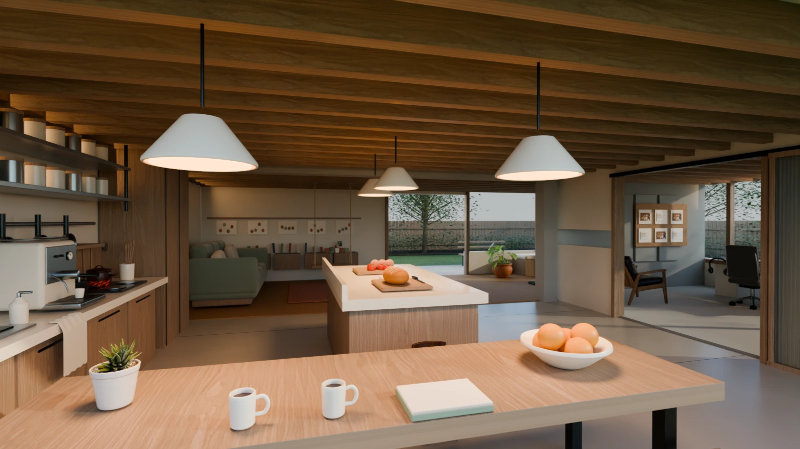
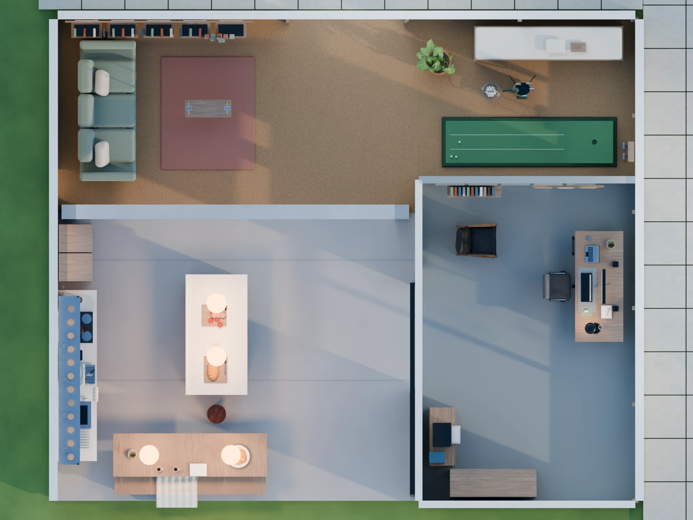
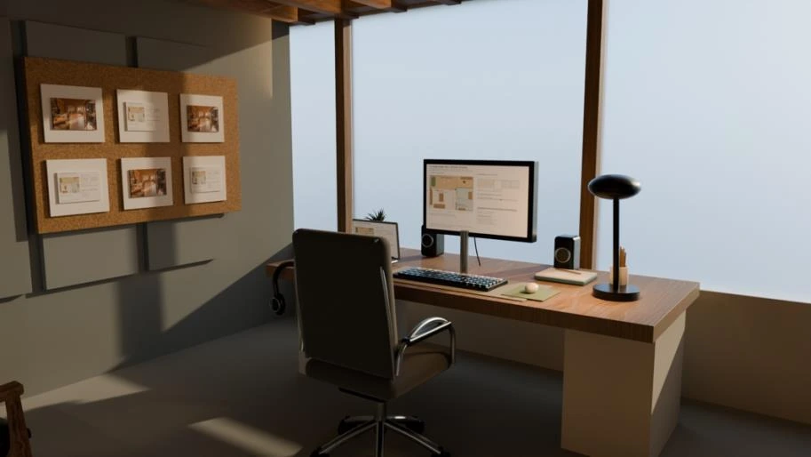
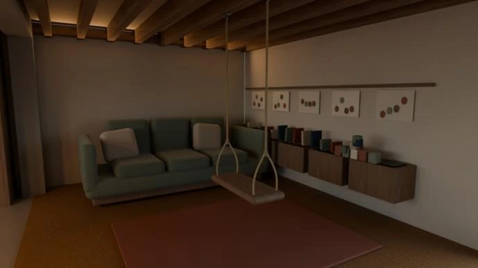
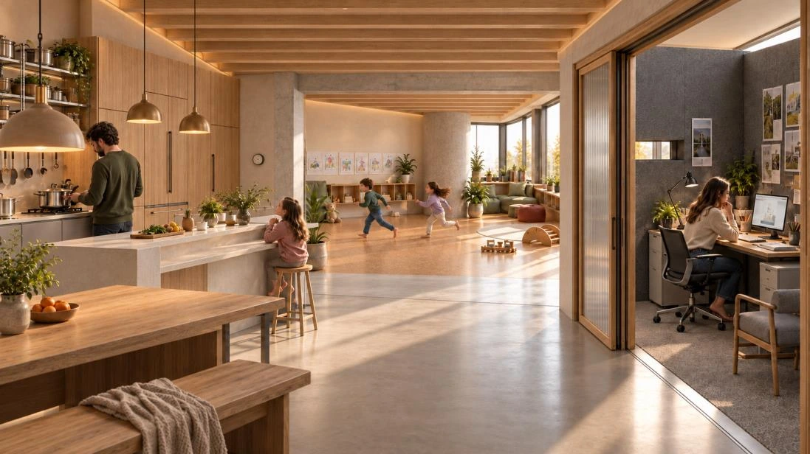
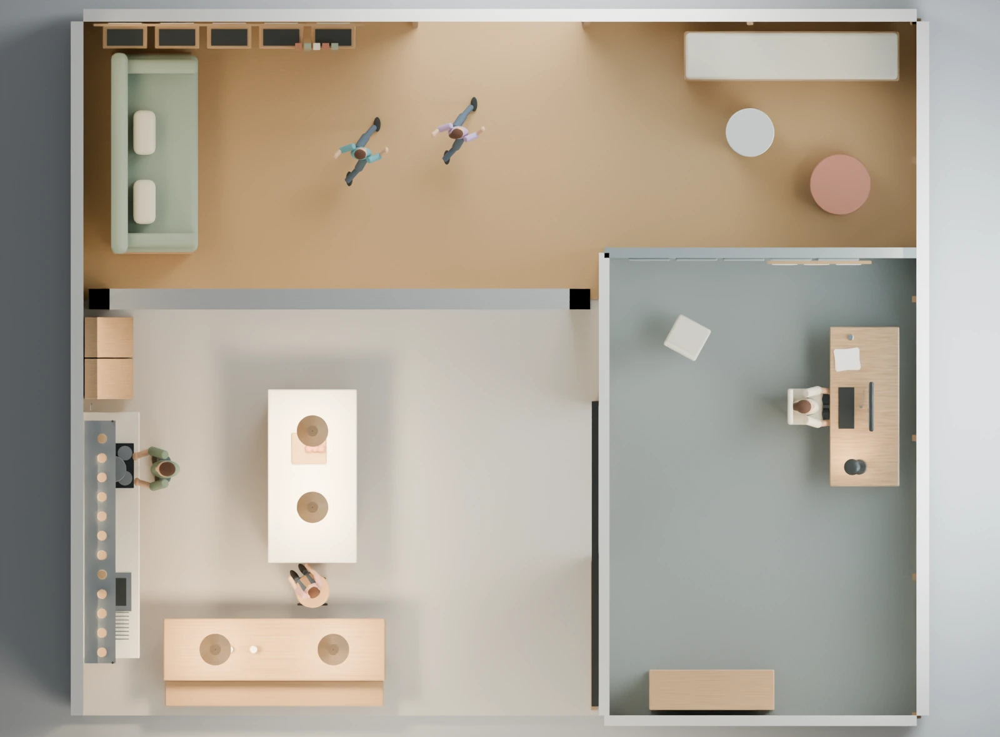
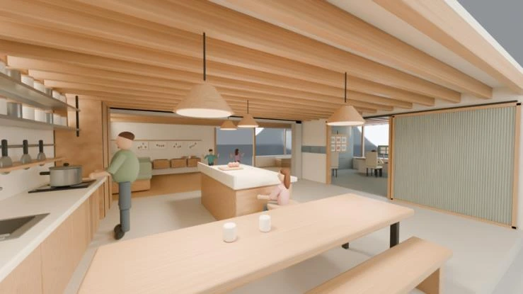
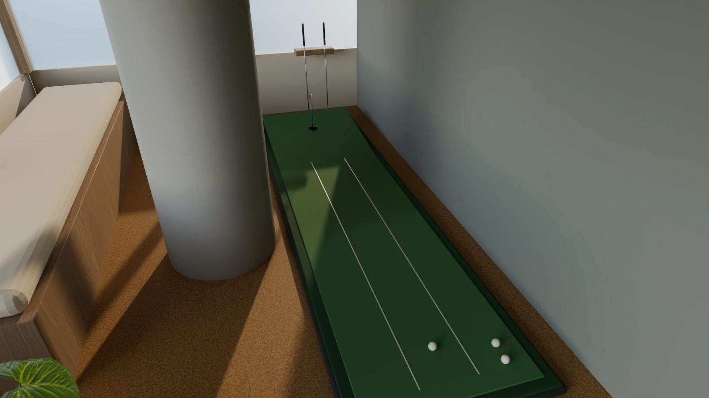
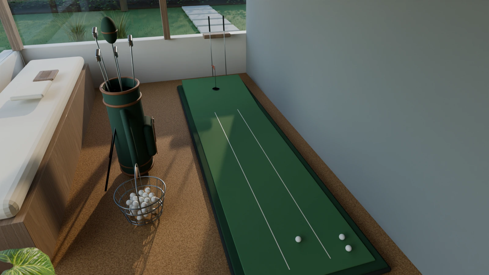

Future Home 2035

A home set in 2035 where a family of five can cook, play and work at the same time without crowding each other. I chose warmth over gadgets: oak, warm pendant light and a garden, with every system in the house kept under human control.
Walkthrough
The plan

Play & living · 45 m²Kitchen & dining · 45 m²Work room · 30 m²- Play & living · 45 m²
- Kitchen & dining · 45 m²
- Work room · 30 m²
About 120 m² in three zones joined by one walkway. A parent cooking can see the play area, and the work room's sliding door can stay open or close for quiet.


Process





Start: detailed furniture and oak replaced the blocks. Middle: the swing, putting green, kitchen machines and food. End: a garden with trees and a fence, and a golf bag in place of the grey cylinder.